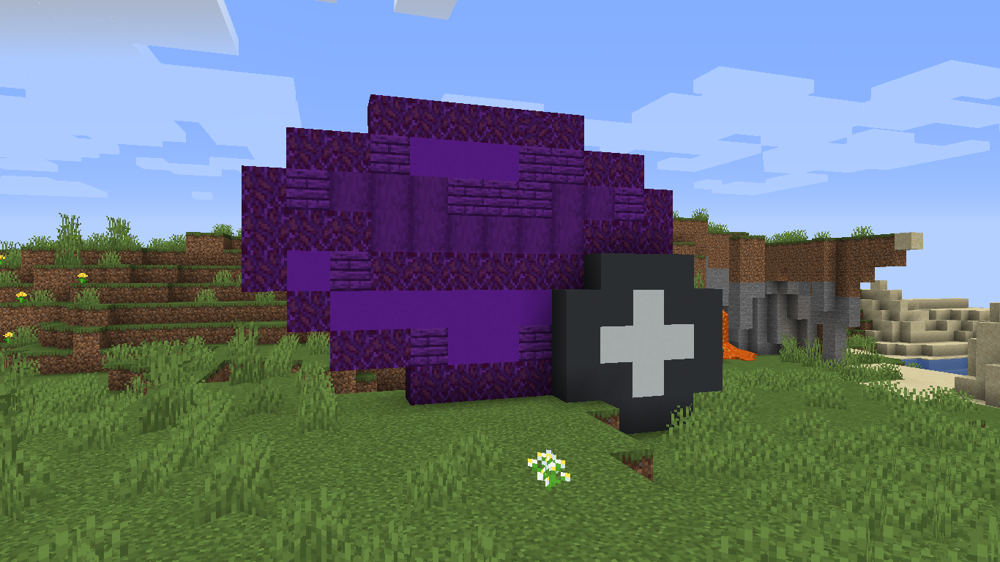

- Variants - 1.8.0.2 -
Written By: JuneTheWoods
Written On: August 14th, 2024
Additions
- Added an
explosionRadiusUpperLimit config.
- This controls what the maximum explosion radius for an Explode stew behavior is.
- Defaults to
128.
- Added a
soundPitchUpperLimit config.
- This controls what the maximum pitch for a Play Sound behavior is.
- Defaults to
2.
- Both of these configs are inside a
stewBehaviors block, and their maximum value is Float.MAX_VALUE.
- Added an Add Experience stew behavior.
- This behavior takes in an
amount integer field, and an optional level boolean field.
- The
level field controls whether it will give you experience points or levels.
- This behavior is properly saved to JSON in the exponential stew recipes.
Technical Additions
- Bowl types are now data-driven. [not yet, but working on it]
- This is an example of the JSON format for the bowl types: Pretend there's JSON code here.
- Bowl types are stored inside
data/namespace/bowl_type.
- Includes an extra
diamond bowl type for testing purposes.
- Currently, the only thing that works is the data generator and the JSON loading system.
Translation Additions
- The error message of the
convertToString() method inside the SetStewBehavior class is now translated.
Changes
- Stew behaviors can now add their own tooltips to the exponential stew item.
- Currently, the only behavior that uses this is the Apply Effects, which adds the effects (and their attributes) to the tooltip, like the food effects.
- These tooltips can be hidden using the
hide_behavior_tooltips hiding tag.
- The
no_counter tag in exponential stews and in the getEffectsFromNBT() method now defaults to false.
- Tags shows when holding Alt will now have line breaks between each tag.
- Sometimes it may not work and will just display a line break character.
- Lava Bottles and Soul Lava Bottles can now draw their burn time from a
seconds_on_fire integer tag.
- Milk Bottles can now draw their curative item from a
curative_item compound tag.
Technical Changes
- Both
sounds.json files are now data-generated.
- This means the empty sound events
variants:entity.fish.ambient and variants:stew_behavior.play_sound.default are no longer included.
- Renamed the
resourceLoc method inside the main Variants class to variants.
- Block flags used in Variants' classes are now defined in the Constants.BlockFlags class.
- World events used in Variants' classes are now referenced from Constants.WorldEvents class (the Forge constants class).
- Removed the
backmath:mid_term_armor_instability damage source as an example for the /damage command.
Translation Changes (Brazilian Portuguese)
- The enderwood forest name in the It's Never Coming* advancement has been corrected to "Floresta Enderwood".
- All enderwood items have been renamed from "item" de madeira do End to "item" do End.
- Removed an extra comma on the Apply Effects description.
Tags
- Removed Prismarine, Prismarine Bricks, Dark Prismarine and Sea Lanterns from
#variants:conduit_frame_blocks block tag.
- Added
#variants:cannot_run_without_nbt stew behavior tag.
- Does not contain anything.
- Stew behaviors in this tag cannot run when either the
behavior or properties tags are null.
Variants Versions